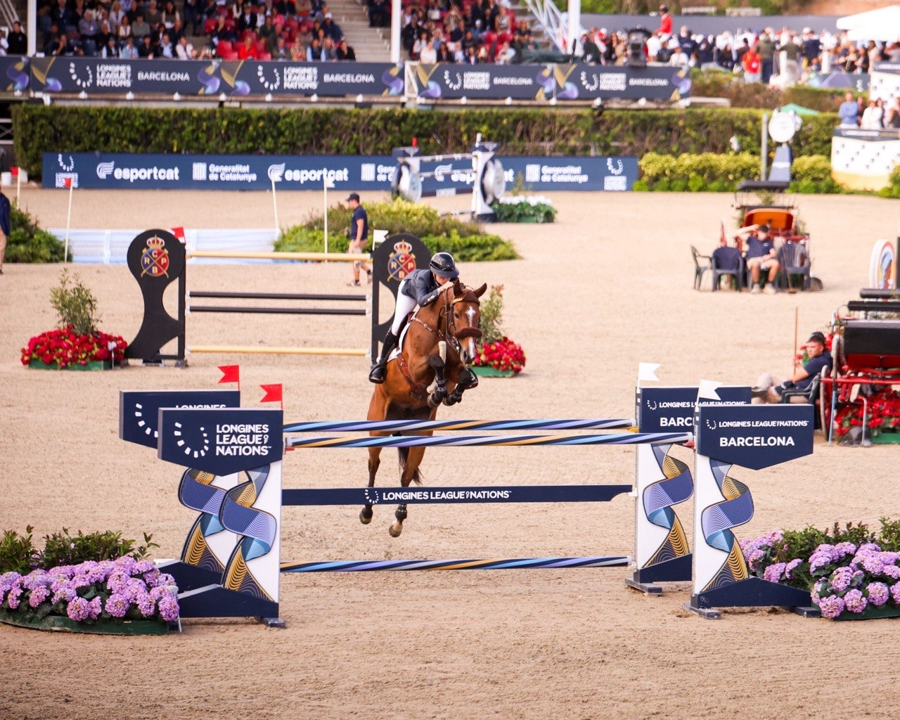

España arranca su temporada de Copas de Naciones en Lier con la mirada puesta en Aachen
La selección española de salto inicia esta semana su calendario internacional por equipos en el CSIO3* de Lier (Bélgica), del 6 al 10 de mayo, primera escala del año en las Longines EEF Series y arranque oficial del recorrido que debe llevar al equipo nacional al gran objetivo de la temporada: el Campeonato del…

La selección española de salto inicia esta semana su calendario internacional por equipos en el CSIO3* de Lier (Bélgica), del 6 al 10 de mayo, primera escala del año en las Longines EEF Series y arranque oficial del recorrido que debe llevar al equipo nacional al gran objetivo de la temporada: el Campeonato del Mundo FEI de Aachen, en agosto.
La cita belga, organizada en el Centro Hípico Azelhof, es el primer compromiso de España con las Copas de Naciones de 2026 y abre la fase clasificatoria de la región Oeste de las Longines EEF Series. La Real Federación Hípica Española ha hecho pública la convocatoria del equipo nacional para esta primera cita, en una temporada que tendrá su máximo exponente en el Mundial de Aachen, programado del 11 al 23 de agosto, con la disciplina de salto disputándose entre el 18 y el 23.
Cuatro nombres concentran el foco de atención en la nómina española. Álvaro González de Zárate llega a Lier en uno de los mejores momentos de su carrera tras un 2025 sobresaliente en el que se proclamó Campeón de España Absoluto de Salto con Casa Diva PS y firmó victorias internacionales como el Gran Premio Cantabria Infinita en el internacional de Heras. Para esta primera Copa de Naciones acude con un trío de gran nivel: Casa Diva PS, Conthargos Blue PS y Coralin 8.
Iván Serrano Sáez aporta la experiencia internacional al bloque. El jinete vasco ya estuvo presente en la edición de 2025 del CSIO de Lier, donde firmó un destacado paso por el Gran Premio con Rain Man, y vuelve ahora con tres caballos —Rain Man, Corvara Blue PS y Paco VS B— para una cita en la que conoce sobradamente el escenario y los tiempos competitivos.
Pilar Cordón Muro, amazona olímpica y referencia histórica del salto femenino español, completa el bloque de veteranía con Pica Pica, Cornetto de Ultra y Salsa de Septon. Su trayectoria en grandes citas internacionales aporta al vestuario un perfil contrastado que la federación ha valorado para empezar la temporada con garantías.
La cuarta apuesta del equipo es Imma Roquet Autonell, en plena progresión durante 2026. La amazona catalana acude a Lier con Elba del Maset e Irivola del Maset, triunfadora en el Trofeo Karlswood del CSI4* de Montenmedio.
La convocatoria se completa con Luis Ortiz Agüera en categoría U25, con Mr Quincy B y Lolarzel Duverie, y Kevin González de Zárate, hermano de Álvaro, que llega con Djoural de Lizet, Chinixen y Jay ZZ. La concurrencia U25 permitirá a la federación rodar también a la próxima generación en el escenario de las Copas de Naciones.
El CSIO3* de Lier reunirá a equipos nacionales de Bélgica, España, Irlanda, Gran Bretaña, Francia, Portugal, Países Bajos, Alemania, Dinamarca, Andorra, Brasil y Suecia, en un cuadro internacional propio de las grandes citas de la EEF Series. Para España, la prueba sirve a la vez como primera oportunidad de puntuar en la liga clasificatoria europea y como toma de contacto del equipo de cara a las próximas convocatorias del calendario internacional, que tendrá su gran cumbre en el regreso del Campeonato del Mundo a Aachen, dieciocho años después de la última cita mundialista que acogió la ciudad alemana.
— Redacción de Hípica al Día